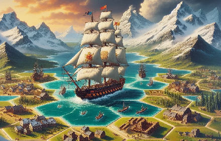

Viktory II Komputer

Viktory II Komputer || Viktory II || Games By Email
Website Under Construction
Game Sound Credits
- Artillery Carts : David Feroli & Enric592
- Land & Frigate Battles : Craig Smith
- Footsteps : Little Robot Sound Factory
- Horses : Ciapaqua, Foxen, Maugusto, Shadowisp
- Lost Game "Last Post" Bugle : Sgt Codie Williams, US Marine Corps Band
- New Game "God Save the King" : US Navy Band
- New Game "La Marseillaise" : French Republic Band via Kevin Luce (kevp888)
- Infantry March : Stib
- Ocean : InnoRecords, Profispiesser
- Saw & Hammer : SoundsLikeYukon
- Sail in Wind : Codefhd
- Ship Bells : Benboncan
- Town Bells: Dnlucex
- Win March : Alienistcog